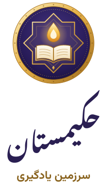

سلام دانشمند! میز آزمایش آماده است؛ چراغک روی چراغ آزمایشگاه منتظر توست تا با هم رازهای طبیعت را کشف کنیم.
به آزمایشگاه خوش اومدی، دانشمند! یک ایستگاه رو انتخاب کن تا چراغک از لولههای شیشهای ببردت اونجا.
هر ایستگاهی که کامل کنی، فلاسکش پر و لولهاش روشن میشه.
با انتخاب هر کارت، چراغک راه میافتد و آزمایش باز میشود.
آزمایشگاه حکیمستان — ساختهشده برای دانشآموزان پایهٔ پنجم دبستان — صفحهٔ اصلی حکیمستان
راهنما
بازی چهارمرحلهای بینایی — درس ۶ علوم پنجم
این گواهی با افتخار به دانشمند کوشا اهدا میشود:
برای تلاش علمی در آزمایشگاه حکیمستان

گواهی صادرشده در —، ساعت — — آزمایشگاه حکیمستان — علوم پایهٔ پنجم دبستان